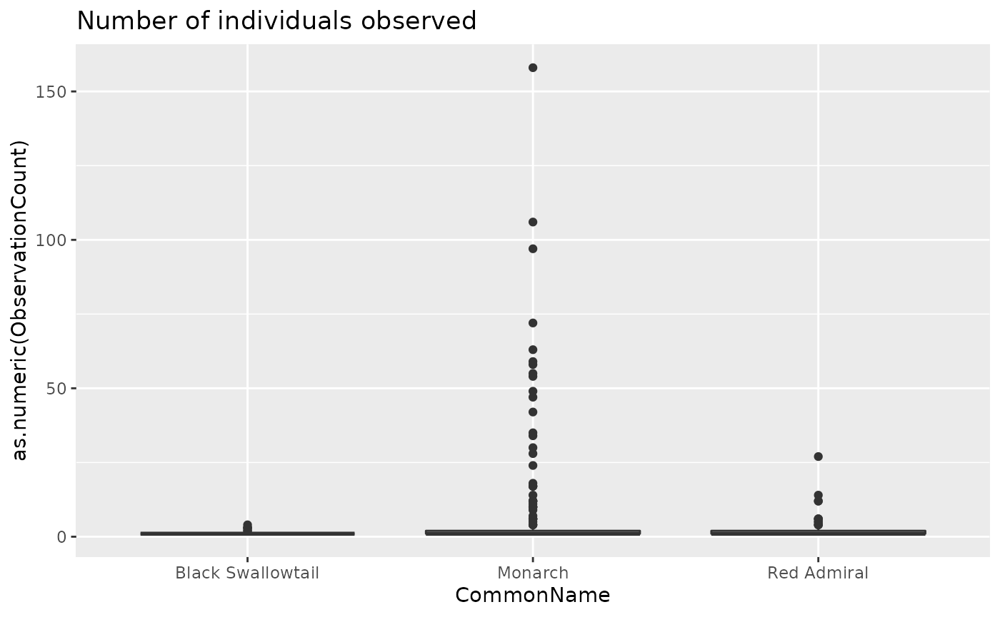
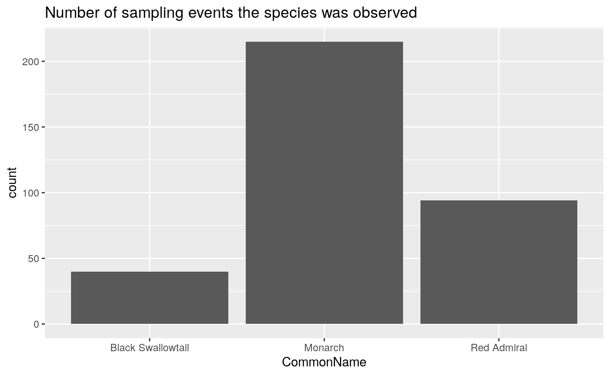
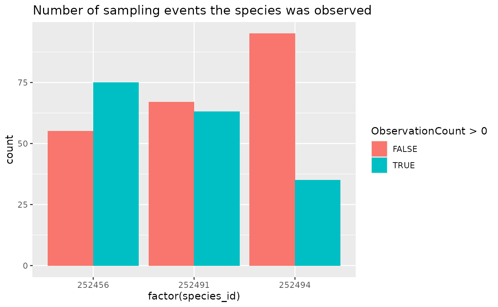

After downloading population data, many analyses require that you have records not only of when/where species were detected, but also where they were not detected. While NatureCounts generally contains records of species presence, we can infer species absence when a species was not detected in a Sampling Event (unique SamplingEventIdentifier), provided that all species were reported for that Sampling Event (i.e. that AllSpeciesReported is “Yes”).
To make things simpler, we have included the format_zero_fill() function.
We’ll use the ‘core’ version of BMDE fields so that we include CommonName for convenience.
rc <- nc_data_dl(collections = "RCBIOTABASE", fields_set = "core",
species = c(252456, 252494, 252491),
username = "sample")## Using filters: collections (RCBIOTABASE); species (252456, 252494, 252491); fields_set (BMDE2.00)## Collecting available records...## access collection nrecords
## 1 yes RCBIOTABASE 349
## Total records: 349##
## Downloading records for each collection:## RCBIOTABASE## Records 1 to 349 / 349Let’s take a look at the butterfly species observations we have
## # A tibble: 3 x 2
## CommonName n
## <chr> <int>
## 1 Black Swallowtail 40
## 2 Monarch 215
## 3 Red Admiral 94How many sampling events?
## # A tibble: 131 x 2
## SamplingEventIdentifier n
## <chr> <int>
## 1 <NA> 176
## 2 RCBIOTABASE-10008-1 1
## 3 RCBIOTABASE-10015-1 1
## 4 RCBIOTABASE-10030-1 1
## 5 RCBIOTABASE-10068-1 1
## 6 RCBIOTABASE-10070-1 1
## 7 RCBIOTABASE-10087-1 1
## 8 RCBIOTABASE-10093-1 2
## 9 RCBIOTABASE-10097-1 1
## 10 RCBIOTABASE-10104-1 1
## # … with 121 more rowsLot’s of sampling events too. But some are missing (NA).
Were all species reported?
## # A tibble: 2 x 2
## AllSpeciesReported n
## <chr> <int>
## 1 No 176
## 2 Yes 173Sometimes, but not all the time.
Finally, let’s take a peak at the observations recorded for these three species
ggplot(data = rc, aes(x = CommonName, y = as.numeric(ObservationCount))) +
geom_boxplot() +
labs(title = "Number of individuals observed")
ggplot(data = rc, aes(x = CommonName)) +
geom_bar() +
labs(title = "Number of sampling events the species was observed")
To better understand these populations, it would be helpful to know not only when these species were observed, but also when they were not.
Because zero-filling requires that all species are reported (how can you know if a species was or was not observed, if it wasn’t reported?), format_zero_fill will return an error if some of the records are not valid.
## Error: Column 'AllSpeciesReported' must be present and 'Yes'Therefore, the first thing we need to do is limit our data to only SamplingEventIdentifiers where all species were recorded.
Note that AllSpeciesReported may not always be strictly true, as bird identification events (e.g., Christmas Bird Counts) may report all bird species, but would probably not report all mammalian species, plants, etc. and vice versa.
## # A tibble: 1 x 2
## AllSpeciesReported n
## <chr> <int>
## 1 Yes 173Now we can fill in all species missing from other sampling events.
## - Converted 'fill' column (ObservationCount) from character to numeric## SamplingEventIdentifier species_id ObservationCount
## 1 RCBIOTABASE-10008-1 252456 1
## 2 RCBIOTABASE-10008-1 252491 0
## 3 RCBIOTABASE-10008-1 252494 0
## 4 RCBIOTABASE-10015-1 252456 2
## 5 RCBIOTABASE-10015-1 252491 0
## 6 RCBIOTABASE-10015-1 252494 0ggplot(data = rc_filled, aes(x = factor(species_id), fill = ObservationCount > 0)) +
geom_bar(position = "dodge") +
labs(title = "Number of sampling events the species was observed")
It might be more helpful to use common names, but through the process of zero-filling, extra columns have been removed.
To keep other columns associated with species id, specify them with the extra_species argument.
## - Converted 'fill' column (ObservationCount) from character to numeric## SamplingEventIdentifier species_id ObservationCount CommonName
## 1 RCBIOTABASE-10008-1 252456 1 Monarch
## 2 RCBIOTABASE-10008-1 252491 0 Red Admiral
## 3 RCBIOTABASE-10008-1 252494 0 Black Swallowtail
## 4 RCBIOTABASE-10015-1 252456 2 Monarch
## 5 RCBIOTABASE-10015-1 252491 0 Red Admiral
## 6 RCBIOTABASE-10015-1 252494 0 Black Swallowtail
## ScientificName
## 1 Danaus plexippus
## 2 Vanessa atalanta
## 3 Papilio polyxenes
## 4 Danaus plexippus
## 5 Vanessa atalanta
## 6 Papilio polyxenesTo keep other columns associated with the sampling event, specify them, in addition to the sampling event id, in the by argument. By default, SamplingEventIdentifier is used to identify specific sampling events.
rc_filled <- format_zero_fill(rc_all_species,
by = c("SamplingEventIdentifier", "latitude", "longitude"),
extra_species = c("CommonName", "ScientificName"))## - Converted 'fill' column (ObservationCount) from character to numeric## SamplingEventIdentifier latitude longitude species_id ObservationCount
## 1 RCBIOTABASE-10008-1 45.5111 -77.50533 252456 1
## 2 RCBIOTABASE-10008-1 45.5111 -77.50533 252491 0
## 3 RCBIOTABASE-10008-1 45.5111 -77.50533 252494 0
## 4 RCBIOTABASE-10015-1 45.5111 -77.50533 252456 2
## 5 RCBIOTABASE-10015-1 45.5111 -77.50533 252491 0
## 6 RCBIOTABASE-10015-1 45.5111 -77.50533 252494 0
## CommonName ScientificName
## 1 Monarch Danaus plexippus
## 2 Red Admiral Vanessa atalanta
## 3 Black Swallowtail Papilio polyxenes
## 4 Monarch Danaus plexippus
## 5 Red Admiral Vanessa atalanta
## 6 Black Swallowtail Papilio polyxenesby other variablesSampling events aren’t the only way of zero-filling data. Perhaps you’re only interested in whether a species has/has not been observed in a particular location.
## - Consider summarizing multiple observations per set of 'by' before zero-filling to increase speed## - Converted 'fill' column (ObservationCount) from character to numeric## utm_square species_id ObservationCount
## 1 18TTR94 252456 1
## 2 18TTR94 252491 0
## 3 18TTR94 252494 0
## 4 18TUR04 252456 1
## 5 18TUR04 252456 1
## 6 18TUR04 252456 1The message about summarizing multiple observations means that we have multiple observations per utm_square. This example isn’t large enough to be slowed down much, but in larger examples, it can be much faster to simplify the dataset first.
rc_sum <- rc_all_species %>%
group_by(utm_square, species_id, AllSpeciesReported) %>%
summarize(ObservationCount = sum(as.numeric(ObservationCount), na.rm = TRUE))
head(rc_sum)## # A tibble: 6 x 4
## # Groups: utm_square, species_id [6]
## utm_square species_id AllSpeciesReported ObservationCount
## <chr> <int> <chr> <dbl>
## 1 18TTR94 252456 Yes 1
## 2 18TUR04 252456 Yes 67
## 3 18TUR04 252491 Yes 46
## 4 18TUR04 252494 Yes 22
## 5 18TUR17 252456 Yes 1
## 6 18TUR27 252491 Yes 1Now if we zero-fill this data set, we get a zero-filled, aggregated dataset.
## utm_square species_id ObservationCount
## 1 18TTR94 252456 1
## 2 18TTR94 252491 0
## 3 18TTR94 252494 0
## 4 18TUR04 252456 67
## 5 18TUR04 252491 46
## 6 18TUR04 252494 22Up to now in these examples we’ve been filling all the species present in the data, but often you might be only interested in one or two species. We can specify which species with the species argument.
## - Converted 'fill' column (ObservationCount) from character to numeric## SamplingEventIdentifier species_id ObservationCount
## 1 RCBIOTABASE-10008-1 252456 1
## 2 RCBIOTABASE-10015-1 252456 2
## 3 RCBIOTABASE-10030-1 252456 0
## 4 RCBIOTABASE-10068-1 252456 0
## 5 RCBIOTABASE-10070-1 252456 2
## 6 RCBIOTABASE-10087-1 252456 0By default format_zero_fill() adds 0’s to the ObservationCount column, but you can specify any column to zero fill.
For example, if you wanted to deal only with Presence/Absence you could create a new presence column and zero-fill this column.
rc_presence <- rc_all_species %>%
select(species_id, AllSpeciesReported, ObservationCount, SamplingEventIdentifier) %>%
mutate(presence = if_else(as.numeric(ObservationCount) > 0, TRUE, FALSE))
head(rc_presence)## species_id AllSpeciesReported ObservationCount SamplingEventIdentifier
## 1 252456 Yes 6 RCBIOTABASE-5553-1
## 2 252491 Yes 1 RCBIOTABASE-5553-1
## 3 252456 Yes 2 RCBIOTABASE-5547-1
## 4 252456 Yes 1 RCBIOTABASE-5546-1
## 5 252494 Yes 1 RCBIOTABASE-6235-1
## 6 252491 Yes 3 RCBIOTABASE-5545-1
## presence
## 1 TRUE
## 2 TRUE
## 3 TRUE
## 4 TRUE
## 5 TRUE
## 6 TRUE## - Converted 'fill' column (presence) from logical to numeric## SamplingEventIdentifier species_id presence
## 1 RCBIOTABASE-10008-1 252456 1
## 2 RCBIOTABASE-10008-1 252491 0
## 3 RCBIOTABASE-10008-1 252494 0
## 4 RCBIOTABASE-10015-1 252456 1
## 5 RCBIOTABASE-10015-1 252491 0
## 6 RCBIOTABASE-10015-1 252494 0